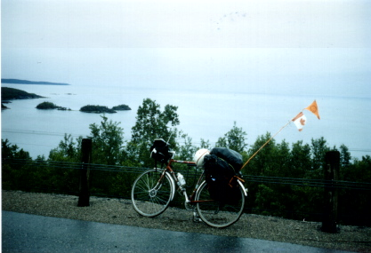

Previous
Day
Previous
Day Next Day
Next Day
Got up when Ihor did. He left for work and I had a shower and wrote some postcards and ate breakfast. Packed up and left. Got away about 10 a.m.
I rode pretty steadily all day. Bought a bit of food in Schreiber.
It was quite a tough day. Lots of hills. However, I still managed to push over 160 km. Now I only have to average 155 till Waterloo area.
The road is not as bad as I thought. Long sections of it have shoulders and there isn't as much traffic as I expected. There was on the section where Hwy 11 and Hwy 17 were the same road. The road doesn't follow the shore very closely--that's why there are so many hills.

Previous
Day
Next Day
 Dave's Page
Dave's Page
 Home
Home